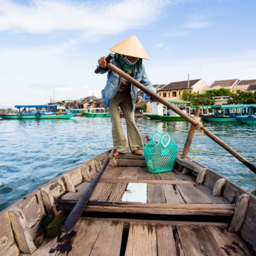

About Da Nang
With broad beaches, fantastic street food, the fabled Hai Van Pass, and a growing collection of cafes, restaurants, and bars, it’s no wonder the residents of Da Nang sport some of the broadest smiles in the country. Da Nang is a true beach city. The warm sands of My Khe Beach sweep south from the mountainous Son Tra Peninsula. Da Nang hosts some of Vietnam's top luxury resorts, but much of the beach still belongs to the people who make it their playground, gym, and source of livelihood.
Da Nang marks the halfway point between the capital in the north, Hanoi, and Ho Chi Minh City in the south. It’s the fourth largest city in Vietnam. Apart from some shopping highlights and historical sights, the main reason for most travellers staying here is its proximity to the well-known My Khe Beach, Lang Co Beach, Hoi An and My Son.
Lang Co Beach is lined with palm trees, the water of the nearby ocean crystal-clear and enticing, lapping onto white sand. It is a peninsula with a sparkling lagoon on one side, and the beach on the other. The area is fairly under-developed, although recent years have seen many new hotels opening. My Khe Beach is more developed, since it was a popular spot for American soldiers seeking R&R during the Vietnam-US War. Water sport activities here are in abundance, and it can get very crowded over weekends and holidays. Da Nang’s coastline stretches 30 kilometres, renowned for calm, cool waters and also popular for fishing, water-skiing, diving, and yachting.Start planning for Da Nang
Create a Trip to save and organize all of your travel ideas, and see them on a map
Enjoy the beach
In the early morning there is a palpable sense of positive energy in Da Nang. It’s impossible not to feel the buzz of Da Nang life and be swept along with it, so be sure to set the alarm clock early at least once on your stay. Along the shore, fishermen sell the day’s catch, football and volleyball matches spring up all around, and people jog, stroll or simply relax as the morning breeze kicks up and waves wash the sands.See the Son Tra Peninsula
The Son Tra Peninsula strikes out into the ocean, its densely forested hillsides are home to rhesus macaques, long-tailed macaques, pygmy lorises, and the endangered red shanked douc langur -- one of the world’s most striking primates. Grab some binoculars, hire a motorbike, and head out for a day of wildlife spotting.Learn about Cham culture
A couple of hours outside of Da Nang lies My Son Sanctuary, a UNESCO-listed complex of abandoned temples dating from the 4th to the 14th century. Hidden among the jungle, some towers are overgrown and many are in ruin, but enough remains to whisk you back in time. To learn more about Cham culture, visit the superb Cham Museum of Sculpture in Da Nang, home to the largest collection of Cham sculpture in the world.Dine on street food
Da Nang is a dream destination for foodies, with scores of seafront eateries serving every night of the week. Banh mi—the Vietnamese baguette—is taken to a new level here. Mi Quang is another delight and every Da Nang local will offer an opinion on where to find the best. Each bowl features yellow rice noodles, pork, shrimp, and a flavour-infused broth topped off with chopped peanuts, quail eggs and plenty of fresh herbs.Plan a daytrip
Marble Mountains, a collection of five outcrops topped with atmospheric pagodas, is a rewarding daytrip from Da Nang. Not far away, Ba Na Hills has made a comeback in recent years thanks to a record-breaking 5km cable car that rises almost 1,300m from sea level. The view across the mountain and jungles from the cable car is spectacular, but the fun begins at the top with an alpine coaster, funicular railway, 18-hole golf course and more.Drive the Hai Van Pass
Hai Van Pass is one of the finest stretches of coastal road anywhere in Vietnam. Climbing for 9km out of Danang, you'll be rewarded by views of deserted beaches and jungle-clad slopes. The descent on the other side leads to the Lang Co lagoon, where floating restaurants will be happy to serve you a fresh seafood lunch.24 hours in Da Nang
Rise early and enjoy the buzz of My Khe beach before a ride out onto the Son Tra Peninsula in search of primates. Escape the afternoon sun at the Museum of Cham Sculpture then head for a sundowner at Sky 36.48 hours in Da Nang
With an extra 24 hours choose from a cultural visit to the UNESCO-listed My Son Sanctuary, a road trip over the stunning Hai Van Pass coastal road, or a ride in a record breaking 5km long cable car up to the fantasy theme park of Ba Na Hills.Weather
Danang is a great destination nearly year round. The best months to visit are from March to May and September to October, when the weather is warm and crowds minimal. June - August is prime time for local tourists; it’s very hot then but very little rain and the sea is clear and calm.Transport to Ha Noi
The Danang International Airport has a number of daily connections from Ho Chi Minh City and Hanoi, as well as other major cities in Vietnam. There are also a growing number of international connecting flights from Hong Kong, Cambodia, South Korea, Japan, China, Bangkok, and Singapore. Hoi An
Hue
Da Lat
Privacy Policy
Terms & Conditions